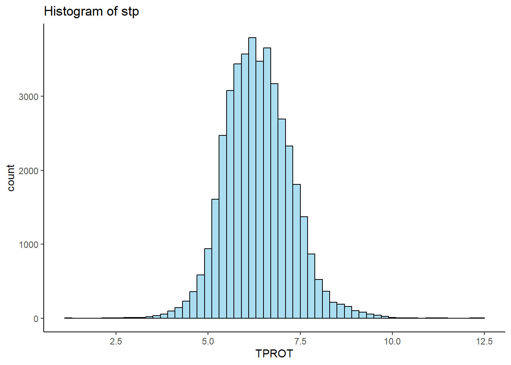
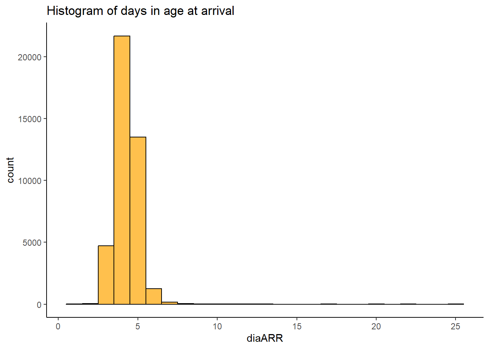
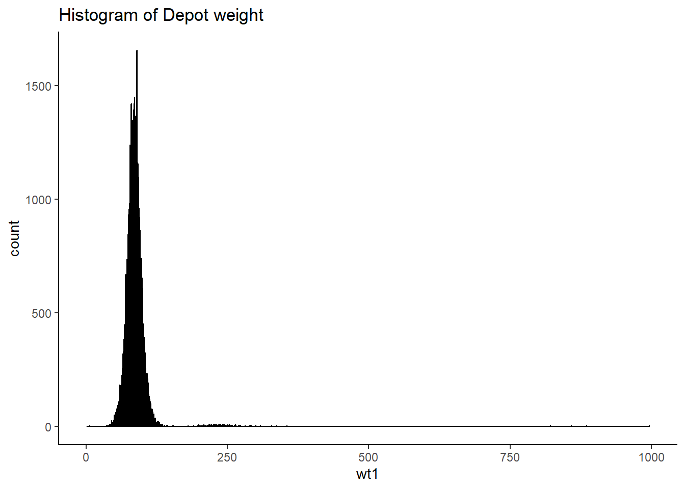
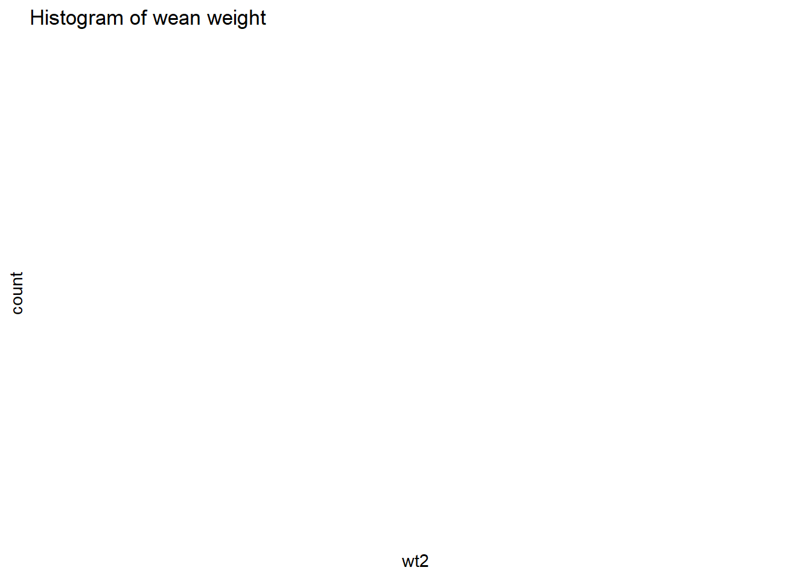

Warning: One or more parsing issues, call `problems()` on your data frame for details,
e.g.:
dat <- vroom(...)
problems(dat)
Rows: 268641 Columns: 28
── Column specification ────────────────────────────────────────────────────────
Delimiter: ","
chr (18): REG, EID, CBRD, BDAT, EDAT, HDAT, CDAT, PODAT, ABDAT, VDAT, ARDAT,...
dbl (9): HERDID, ID, PEN, LACT, RC, FDAT, DDAT, DIM, T
lgl (1): ...28
ℹ Use `spec()` to retrieve the full column specification for this data.
ℹ Specify the column types or set `show_col_types = FALSE` to quiet this message.
kdd2 <-read_csv('data/kdd2.csv')
New names:
• `` -> `...28`
Warning: One or more parsing issues, call `problems()` on your data frame for details,
e.g.:
dat <- vroom(...)
problems(dat)
Rows: 339334 Columns: 28
── Column specification ────────────────────────────────────────────────────────
Delimiter: ","
chr (19): REG, EID, CBRD, BDAT, EDAT, HDAT, FDAT, CDAT, PODAT, ABDAT, VDAT, ...
dbl (8): HERDID, ID, PEN, LACT, RC, DDAT, DIM, T
lgl (1): ...28
ℹ Use `spec()` to retrieve the full column specification for this data.
ℹ Specify the column types or set `show_col_types = FALSE` to quiet this message.
kdd3 <-read_csv('data/kdd3.csv')
Rows: 339330 Columns: 27
── Column specification ────────────────────────────────────────────────────────
Delimiter: ","
chr (18): REG, EID, CBRD, BDAT, EDAT, HDAT, CDAT, PODAT, ABDAT, VDAT, ARDAT,...
dbl (9): HERDID, ID, PEN, LACT, RC, FDAT, DDAT, DIM, T
ℹ Use `spec()` to retrieve the full column specification for this data.
ℹ Specify the column types or set `show_col_types = FALSE` to quiet this message.
kdd4 <-read_csv('data/kdd4.csv')
New names:
• `` -> `...28`
Warning: One or more parsing issues, call `problems()` on your data frame for details,
e.g.:
dat <- vroom(...)
problems(dat)
Rows: 579427 Columns: 28
── Column specification ────────────────────────────────────────────────────────
Delimiter: ","
chr (18): REG, EID, CBRD, BDAT, EDAT, HDAT, CDAT, PODAT, ABDAT, VDAT, ARDAT,...
dbl (9): HERDID, ID, PEN, LACT, RC, FDAT, DDAT, DIM, T
lgl (1): ...28
ℹ Use `spec()` to retrieve the full column specification for this data.
ℹ Specify the column types or set `show_col_types = FALSE` to quiet this message.
kdd5 <-read_csv('data/kdd5.csv')
New names:
• `` -> `...28`
Warning: One or more parsing issues, call `problems()` on your data frame for details,
e.g.:
dat <- vroom(...)
problems(dat)
Rows: 1046541 Columns: 28
── Column specification ────────────────────────────────────────────────────────
Delimiter: ","
chr (18): REG, EID, CBRD, BDAT, EDAT, HDAT, CDAT, PODAT, ABDAT, VDAT, ARDAT,...
dbl (9): HERDID, ID, PEN, LACT, RC, FDAT, DDAT, DIM, T
lgl (1): ...28
ℹ Use `spec()` to retrieve the full column specification for this data.
ℹ Specify the column types or set `show_col_types = FALSE` to quiet this message.
#trim all data so it can be mergedkdd1trim <- kdd1 %>%select( "ID", "EID", "CBRD", "BDAT", "Event", "DIM", "Date", "Remark")kdd2trim <- kdd2 %>%select( "ID", "EID", "CBRD", "BDAT", "Event", "DIM", "Date", "Remark")kdd3trim <- kdd3 %>%select( "ID", "EID", "CBRD", "BDAT", "Event", "DIM", "Date", "Remark")kdd4trim <- kdd4 %>%select( "ID", "EID", "CBRD", "BDAT", "Event", "DIM", "Date", "Remark")kdd5trim <- kdd5 %>%select( "ID", "EID", "CBRD", "BDAT", "Event", "DIM", "Date", "Remark")#merge into one data setSTACK <-bind_rows(kdd1trim = kdd1trim,kdd2trim = kdd2trim, kdd3trim = kdd3trim, kdd4trim = kdd4trim,kdd5trim = kdd5trim,.id ="source" )STACK %>%group_by(Event, Remark) %>%count()
# A tibble: 14,266 × 3
# Groups: Event, Remark [14,266]
Event Remark n
<chr> <chr> <int>
1 ABORT 100 DAYS 2
2 ABORT 101 DAYS 1
3 ABORT 102 DAYS 1
4 ABORT 103 DAYS 3
5 ABORT 104 DAYS 1
6 ABORT 105 DAYS 1
7 ABORT 106 DAYS 3
8 ABORT 107 DAYS 1
9 ABORT 108 DAYS 1
10 ABORT 109 DAYS 3
# ℹ 14,256 more rows
Something is going on with missing data. I need to ditch the enroll and figure out how to add sex and Total protein into the first download? Forgot to use the which removed calves who died and/or who were sold
enroll <-read_csv('data/KDD enroll.csv')
Rows: 41965 Columns: 8
── Column specification ────────────────────────────────────────────────────────
Delimiter: ","
chr (6): EID, BDAT, SEX, CBRD, TPROT, GODER
dbl (2): ID, BTHWT
ℹ Use `spec()` to retrieve the full column specification for this data.
ℹ Specify the column types or set `show_col_types = FALSE` to quiet this message.
final$ID <-as.character(final$ID)enroll$ID <-as.character(enroll$ID)full <- final %>%left_join(enroll, by ="ID")full <- full %>%filter(Date_GODEER1 <"2025-11-13") %>%relocate(EID, BDAT, SEX, CBRD.y, TPROT, BTHWT, .before = ID) %>%select(-CBRD.x, -GODER, -BTHWT) full <- full %>%filter(!is.na(as.numeric(TPROT))) %>%mutate(TPROT =as.numeric(TPROT))
Warning: There was 1 warning in `filter()`.
ℹ In argument: `!is.na(as.numeric(TPROT))`.
Caused by warning:
! NAs introduced by coercion
#any comp with NA or <10 calves were removed as this seemed unlikely (n = 7 compartments totaling n=41 calves was removed )comp <-read_csv('data/COMPARTMENTS.csv') %>%drop_na()
New names:
Rows: 1552 Columns: 7
── Column specification
──────────────────────────────────────────────────────── Delimiter: "," chr
(2): LOAD, date dbl (5): ...1, comp, n, sqft, SD
ℹ Use `spec()` to retrieve the full column specification for this data. ℹ
Specify the column types or set `show_col_types = FALSE` to quiet this message.
• `` -> `...1`
# A tibble: 2 × 2
trtb4 n
<dbl> <int>
1 0 38185
2 1 3393
#remove the calf that was recorded to have died two days before it was born? full_new1 <- full_new1 %>%filter(diedex ==0)notrt_before <- full_new1 %>%filter(!if_any(c(RESPex, DIAex, navelex, bloatex, illex, injuryex, lameex, septicex, diedex), ~ . ==1))#look at some other things to mess with prior to making final data sets: full_new1 |>ggplot(mapping=aes(TPROT))+theme_classic()+geom_histogram(binwidth=0.2, fill="skyblue", color="black", alpha=0.7)+labs(title ="Histogram of stp")

full_new1|>ggplot(mapping=aes(x=diaARR))+theme_classic()+geom_histogram(binwidth=1, fill="orange", color="black", alpha=0.7)+labs(title ="Histogram of days in age at arrival")
Warning: Removed 131 rows containing non-finite outside the scale range
(`stat_bin()`).

full_new1|>ggplot(mapping=aes(x=wt1))+theme_classic()+geom_histogram(binwidth=0.2, fill="purple", color="black", alpha=0.7)+labs(title ="Histogram of Depot weight")
Warning: Removed 147 rows containing non-finite outside the scale range
(`stat_bin()`).

full_new1|>ggplot(mapping=aes(x=wt2))+theme_classic()+geom_histogram(binwidth=0.2, fill="pink", color="black", alpha=0.7)+labs(title ="Histogram of wean weight")
Warning: Removed 5418 rows containing non-finite outside the scale range
(`stat_bin()`).
Warning: Computation failed in `stat_bin()`.
Caused by error in `bin_breaks_width()`:
! The number of histogram bins must be less than 1,000,000.
ℹ Did you make `binwidth` too small?

FULL <- full_new1 %>%select (ID, BDAT, SEX, CBRD.y, TPROT, wt1, wt2, LOADfull, comp, SD, diaload, diaARR, trtb4, DIA1, dfaD1, DIAex, Remark_SCOURS1, PN1a, dfaP1, RESPex, Remark_PNEU1, B1, dfaB1, Remark_BLOAT1, bloatex, N1, dfaN1, Remark_NAVEL1, navelex, IM1, dfaIM1, Remark_ILLMISC1, illex, I1, dfaI1, Remark_INJURY1, injuryex, L1, dfaL1, Remark_LAME1, lameex, Sep1, dfaS1, Remark_SEPTIC1, septicex, DIED, dfaDIED, Remark_DIED1, diedex)EXCLUDE <- notrt_before %>%filter(diaARR<=7) %>%#removes 68 older than 7d at arrival and 131NAsselect(ID, BDAT, SEX, CBRD.y, TPROT, wt1, wt2, LOADfull, comp, SD, diaload, diaARR, DIA1, dfaD1, Remark_SCOURS1, PN1a, dfaP1, Remark_PNEU1, B1, dfaB1, Remark_BLOAT1, N1, dfaN1, Remark_NAVEL1, IM1, dfaIM1, Remark_ILLMISC1, I1, dfaI1, Remark_INJURY1, L1, dfaL1, Remark_LAME1, Sep1, dfaS1, Remark_SEPTIC1, DIED, dfaDIED, Remark_DIED1)write.csv(x=FULL, file ='data/FULL.csv')write.csv(x=EXCLUDE, file ='data/EXCLUDE.csv')#8% of calves were treated prior to transport, and they'll be removed from the data set. Only calves who were healthy prior to transport will be included in the final analysis (EXCLUDE - n=38184 observations)#Of the calves who were treated prior to transport, what were they treated for? I'll create a new data set with only those calves, and then look at number of dia1 etc. trt_bf <- FULL %>%filter(trtb4 ==1)trt_bf %>%count(DIED)
# A tibble: 2 × 2
DIED n
<dbl> <int>
1 0 3138
2 1 255
#7.5% died from this group vstrt_bf %>%count(Remark_DIED1)
# A tibble: 2 × 2
DIED n
<dbl> <int>
1 0 36379
2 1 1606
#4.2% in the rest of the group#might be interesteing to look at reasons or if there are certain predictors of death post transport in that population. Beyond the scope of the present analysis. #need to deal with some of the weights. What are reasonable birth and wean weights for Jersey, Holstein and crossbred? #Jersey: 42 - 70lb#Holstein: 80 - 125#wean weights - #Jersey: 122 - 146#Holstein: 113 - 238
EXCLUDE data set
(n=38184 calves who were transported from 11/12/24 to 11/12/25)
Questions:
What to do with the weight data? Need to come up with reasonable way to exclude data based on reasonable birth and wean weights (but also does this matter?) Also, is wt1 birth or arrival at depot weight?
What to do with calves who arrive dat is long (> 7d of age at arrival)? Likely that calves who were delayed transport were not normal for some reason. There are n=68 animals plus NAs, so It’s probably OK to exclude them. What about the compartment those calves were transported in? Reasonable to expect that those calves were not too big and didn’t skew the SD too much?
Need to add a bunch of variables for timing and to set up the data set a bit better.